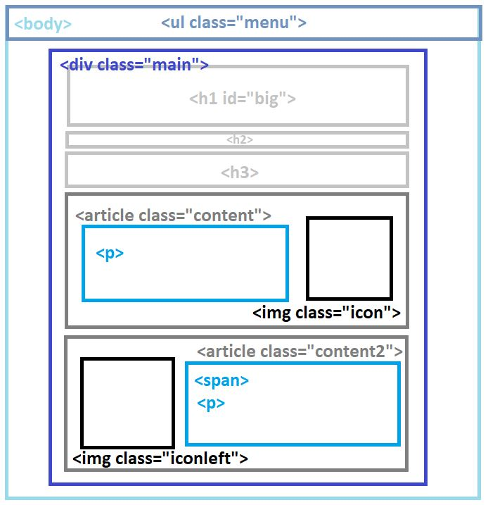
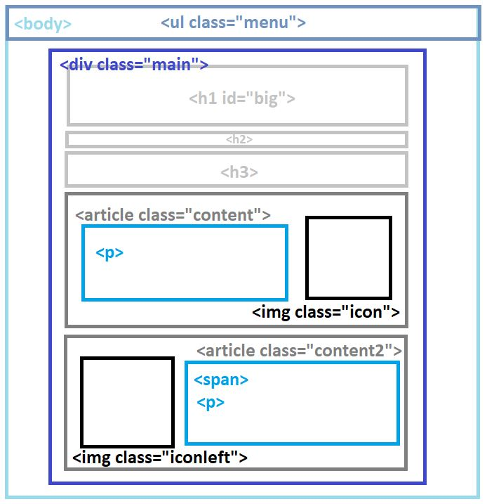
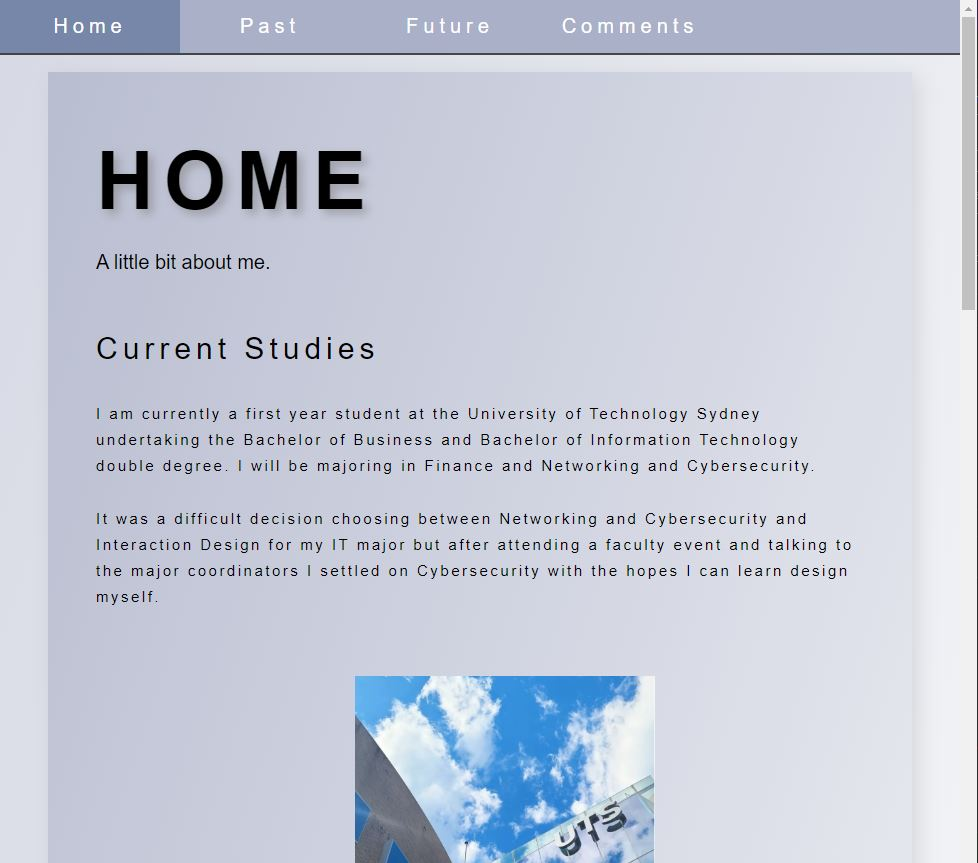
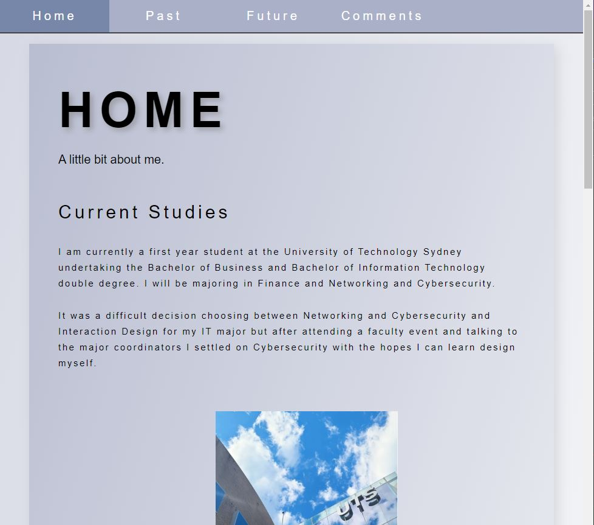
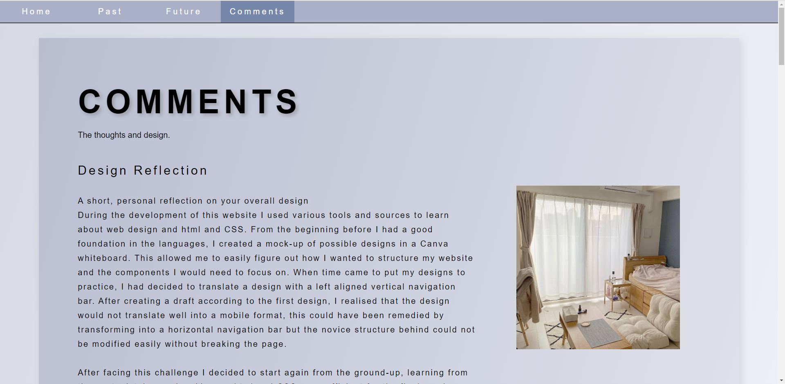

Comments
The thoughts and design.
Design Reflection
During the development of this website I used various tools and sources to learn about web design and html and CSS. From the beginning before I had a good foundation in the languages, I created a mock-up of possible designs in a Canva whiteboard. This allowed me to easily figure out how I wanted to structure my website and the components I would need to focus on. When time came to put my designs to practice, I had decided to translate a design with a left aligned vertical navigation bar. After creating a draft according to the first design, I realised that the design would not translate well into a mobile format, this could have been remedied by transforming into a horizontal navigation bar but the novice structure behind could not be modified easily without breaking the page.
After facing this challenge I decided to start again from the ground-up, learning from the past mistakes and making my html and CSS more efficient for the final version. Restarting also gave me the chance to change my page layout to a horizontal navigation bar which would compact when the screen was smaller, this made the website more consistent. I think I succeeded in translating my interests in minimal design into my website.
 

Technical Breakdown
The general page structure consists of the following:
All encompassing body element with a linear gradient to bottom right fading between two semi-transparent greys to mimic a soft glass effect.
The ul class="menu" unordered list functions as a horizontal navigation bar at the top of the page, it records and highlights the link of the current page with a class="active", the css identifier a:hover:not allows to highlight the link that the mouse is over, and each element of the list links you to the respective page through a href=(pagename).html. I chose to use the list as the nav bar due to its flexibility when on smaller screens, with elements becoming aligned vertically so they aren't compressed.
Underneath the nav bar within the body is a div with the class "main" which will contain all the content of the site. The typical structure I followed is a large page heading h1 id="big", the id was used to differentiate the title from the use of h1 elsewhere but was later discarded so only h1 with an id remained. Following the heading is a h2 description of the page. The main has a drop shadow and a similar linear-gradient to create depth in the page.
After the two headings, there is two instances of articles, one which contains one or more paragraphs to the left and an image classed as "icon" to the right. The second type has an image classed as "iconleft" a span and paragraphs to the right. The span was used to create a h3 equivalent in the article because the first article's heading was above the element. The images have different classes due to their positioning and have slightly different margins to align neatly. There is of couse some variation with the articles but majority follow this structure. I named the classes simiarly so it would be easy to identify them when modifying CSS, they are named very literally. The images were not rounded or bordered to match the clean cut aesthetic of the page.
 

The initial structure on a mobile device would definitely cause issues if the images, navigation bar and paragraphs were to remain aligned horizontally. This is why the dispaly "flex" was adapted. By using the meta "viewport" in the html head, we can reference @media screen in the CSS which allows us to create modifications to elements and classes when the width of the screen reaches a certain size. In this case, when the screen reached 1600px width and less, the images and text would shrink and some margins would be adjusted to better fit the content on screen. When the screen reached 1200px - images would move below or above the text and not to the side by changing the flex-direction to "column". Finally, when the screen was less than 720px, the menu would compact and stack. The screenshot adjacent to this paragraph illustrates a web page that has a size less than 1200px but greater than 720px.
The table below showcases a sample of the major elements, clases and ids that have been used in websystems.css. Items by themselves such as body, h2 and span are classified as elements in their raw form, items beginning with a . such as .icon reference classes, which are unique identifiers used to create variations of elements, similarly items with a # such as h1#big reference unique identifiers, in this case the h1 tag with the id "big".
| NAME |
TYPE |
DESCRIPTION |
| body |
Element |
Styles for the whole web page. |
| ul.menu |
class |
Style for the entire list - in this case to become a navigation bar. |
| ul.menu li ... |
Element of class |
Styles for each item in the list. |
| .icon |
class |
Defines styles for the images on each page, consistent size and styling. |
| .main |
class |
Styles for the entire content of the page - encompasses page heading and multiple .content divs. |
| h1#big, h2, h3, p |
Element with id, Element |
Syles each heading or paragraph according to the element, class or id. |
| .sec |
class |
Modified styling of p to account for the different position and placement within the .main div. |
| .content |
class |
Style for each block including a subheading, paragraph(s) and an image. |
| .iconleft |
class |
Modified styling of .icon to account for the different position and placement within the .main div. |
| span |
Element |
Modifies a selected section of the website content without creating a new div/section. |
| .csstable |
class |
Style for the current table. |
Aesthetics
Drawing from my interests in minimal design - my website reflects the desire for simplicity. With a mild colour scheme and extensive use of white space the site provides a soft and clean presenation of the information required. I aimed to replicate the comfortable aesthetics in the overall design using a limited and desaturated colour pallete which is also common with modern style minimal web designs. By utilising transparency effects and gradients on the main div and body element, a softer look is achieved rather than a blank white box. This was inspired by recent graphic design trends of 'glass' elements which create dimension. The main div is elevated from the body by a soft shadow to replicate a paper or page like look and break up excessive white space on the sides created by compacting the text towards the center of the page. The text is focused more towards the center and in tighter paragraphs for more comfortable reading and balance between text and images.
To maintain the clean look of the website without additional clutter underneath images; the sources of the photos were added into the title and alt tags, which would appear on hover or in place of the image. The image choice is consistent throughout - utlising cool tones and visual representations of the style inspiration. Like the images, the website highlights the structural and design features over personal details - hence why there is no images of myself or people.
![Aesthetic korean living room, source - [@rhythm.j].(2022, September 29).나의 첫 빈티지 패브릭--.Instagram](comments3.jpg "source - [@rhythm.j].(2022, September 29).나의 첫 빈티지 패브릭--.Instagram")

Accessibility
According to StatCounter(Anderson,2022) - as of June 2022, the most common resolutions globally were:
- Desktop 1920×1080 – 22.97%
- Mobile 360×800 – 9.15%
- Tablet 768×1024 – 32.74%
(hover text for reference)
My website was designed primarily for desktop viewing, it is based off the most common resolution of 1920px width for the best viewing but is adaptable and flexible for a wide range of screen widths, smaller and bigger to be compatible with mobile phones and tablets as seen in the screenshots.
The minimal colour pallete utilises contrast in the case of visual impairments or different display settings such as colour-blindness or black and white modes, allowing the content to still be legible and accessible.
Images have alternative text for the case of inaccessible image data, allowing accessibility for blind people and people with limitations resulting in the image being unable to be displayed.
Text size is large and broken down into clearly defined sections in a consistent sans-serif font to minimise visual noise and increase legibiliy to ease of reading for those with difficulties reading such as older people.
The language attribute 'en' is specified in the html tag for each page to aid browsers and search engines in identifying and translating the texts within the website. This allows the potential for greater accessibility for users who can't read English.
